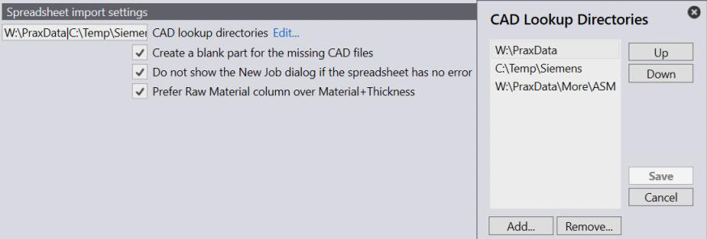

The spreadsheet file refers to a part by part-name. When a spreadsheet file is imported, Praxis first searches for the part in the Part Library and if not found, then it imports it from the CAD lookup directories. 
Setup the lookup directories and look-up order using this setting.